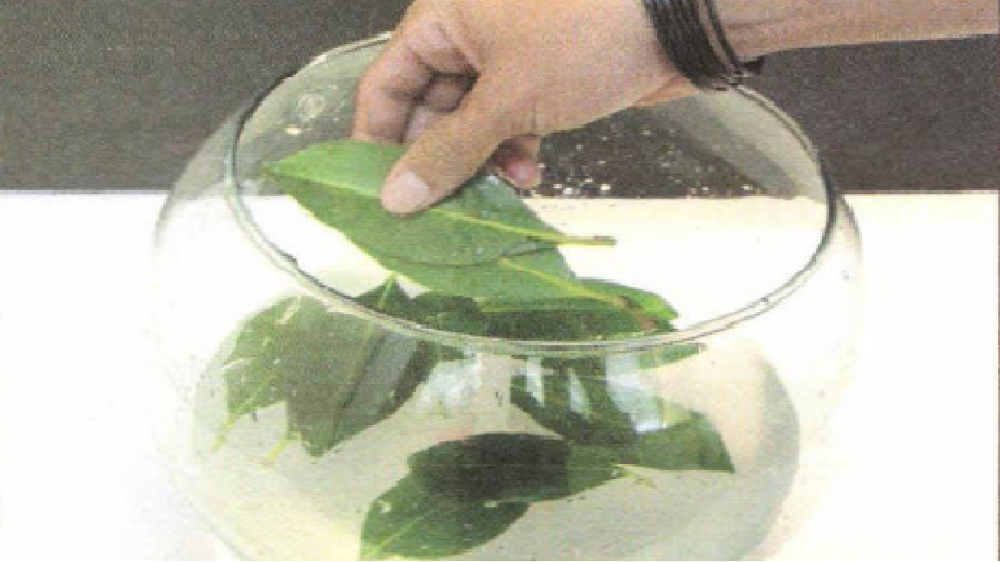
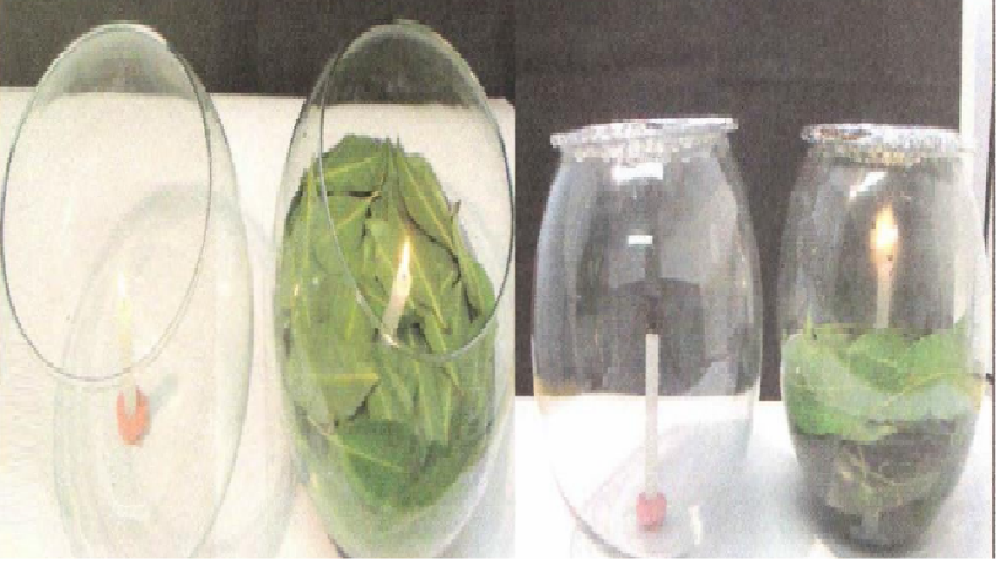

Prática 1: ABSORVENDO O CO2
Materiais Necessarios:
2 velas;
Folhas de árvores ou arbustos recém-coletadas;
Fósforos ou isqueiro;
1 massa de modelar;
Água;
2 recipientes de vidro com tampa.
Procedimento:
Use pedaços de massa de modelar para afixar as velas em pé no fundo dos dois recipientes de vidro. Coloque os dois recipientes ao ar livre, expostos ao Sol, lado a lado. Coloque água nos dois recipientes até cobrir parte das velas;

Em um dos recipientes, coloque as folhas recém-colhidas até que cubram toda a superfície da água. Quanto mais folhas você conseguir ..
Colocar na água, melhor será. Cuidado para não esmagar as folhas, pois elas devem estar inteiras;
Acenda as duas velas. Feche os recipientes de vidro com as tampas, de maneira que nenhum ar possa entrar ou sair dos recipientes de vidro.
Após alguns instantes, as duas velas irão se apagar. No entanto, a vela do recipiente de vidro com folhas deve ter demorado mais para apagar. Isso acontece porque as duas velas liberam dióxido de carbono e consomem oxigênio. Depois de algum tempo, o oxigênio vai acabar dentro dos dois recipientes de vidro, pois eles estão fechados. Entretanto, as folhas irão absorver parte do dióxido de carbono e liberar oxigênio, fazendo com que o oxigênio dure mais tempo no recipiente de vidro com as folhas.